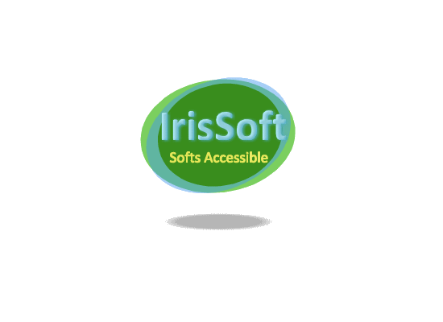

Sur cette page, vous pouvez trouver certains de mes programmes, et les télécharger.
Tous les programmes disponible sur cette page son sous la lissence GPL3 Dans le cas contraire la lissence sera spécifié.
Voici UniversalReloader, compatible avec jaws et nvda . Voici la présentation de ce programme : Assez souvent, les lecteurs d'écran ont la facheuse habitude de se bloquer, bloquant très souvent avec eux l'utilisation des flèches de direction du clavier, David Damota avait fait, il y a assez longtemps un petit programme pour relancer jaws dans le cas où celui-ci serai bloqué, seulement l'inconvéniant de ce petit programme est qu'il tentait d'arrêter jaws une seule fois, et quand il y parvenait un bruit d'un coup de fusil retentissait (peu discret pour ceux qui travaillent). UniversalReloader tente de faire la même chose, mais tant que jaws n'a pas réussit à être enlevé de la mémoire il réessai à nouveau de l'enlever, quand il y parvient on entend un son court et discret, puis il le relance, pour qu'il puisse le relancer vous devez spéciffier la version de votre jaws dans la boîte de dialogue de configuration, j'ai mis 15 par défaut mais vous pouvez la changer. La même chose fonctionne pour nvda, qu'il relance, pour qu'il sois relancé il faut spécifier le dossier de nvda dans la boîte de dialogue de configuration du programme, par défaut il s'agit du dossier d'installation sur lequel l'installeur installe nvda, mais vous pouvez le changer. Quand les deux lecteurs d'écran sont lancés en même temps, (ce qui arrive parfois suite à une fausse manoeuvre), le programme vous permettra de quitter l'un des deux, par défaut il s'agit de jaws, mais vous pouvez spécifier le nom du lecteur d'écran à quitté dans la même boîte de dialogue de configuration. Cette option permet que l'un des deux lecteurs d'écran puisse fonctionné sans être gêné, par l'autre. Ce programme se lance, en appuyant sur CTRL+ALT+U, dès qu'il à finit son travail il quitte. Il sera possible de l'étendre à d'autres lecteurs d'écran (déjà fait avec NVDA), mais on peux en ajouter d'autres, bientôt des options de configuration permettron de choisir comment le programme réagit, ça le rendra personalisable selon les gouts et besoins de chacuns, partiellement déjà fait avec cette nouvelle version, d'autres options de configuration sont à l'étude..